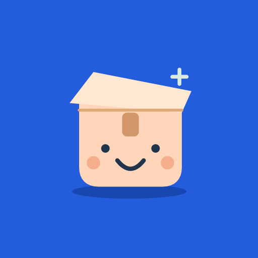

Registro de objetos
Organiza la información sobre las cosas que deseas localizar.
Una aplicación Android para recordar dónde guardaste tus objetos y encontrarlos fácilmente.

Una aplicación Android para recordar dónde guardaste tus objetos y encontrarlos fácilmente.
La aplicación se encuentra en producción en Google Play. Para consultas sobre disponibilidad, contacta con nuestro equipo de soporte.
Descargar en Google PlayConoce las funciones y capacidades de la aplicación.
Organiza la información sobre las cosas que deseas localizar.
Recuerda el lugar donde dejaste cada objeto.
Utiliza referencias visuales cuando estén disponibles en la aplicación.
Encuentra los registros que necesitas de forma práctica.
La aplicación se encuentra en producción en Google Play. Para consultas sobre disponibilidad, contacta con nuestro equipo de soporte.
La documentación de privacidad específica de este producto tendrá su propio espacio oficial. No se publicarán políticas inventadas ni enlaces de descarga ficticios.
¿Necesitas ayuda con ¿Dónde Quedó?? Escribe a freddtech26@gmail.com. El enlace abre tu aplicación de correo para que envíes el mensaje.
Consultar información de privacidad